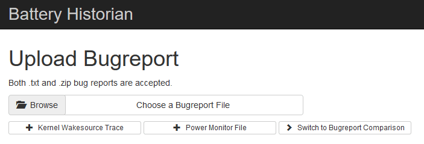
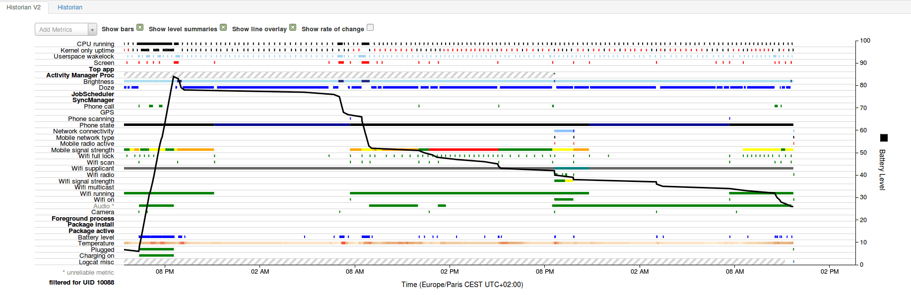
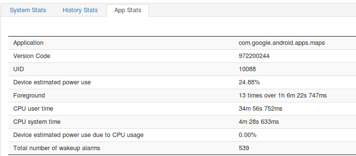

Chez GREENSPECTOR, nos équipes R&D travaillent depuis plusieurs années sur la mesure d’énergie des smartphones. Plusieurs années de recherche et innovation qui nous permettent aujourd’hui de proposer un produit unique permettant de mesurer simplement les données d’énergie des smartphones. Il existe néanmoins des outils qui permettent de compléter l’analyse du comportement de la batterie et du téléphone. Battery Historian en fait partie.
Battery Historian est un outil développé par Google, lancé en 2016, qui permet d’analyser le comportement d’un téléphone et plus exactement d’examiner les informations et évènements liés à la batterie. Il s’agit, nous le verrons, d’un outil d’analyse pour expert. Plusieurs métriques et insights sont disponibles : cellules radio, communication… tout cela corrélé au niveau de batterie.
Tutoriel d’usage de Battery Historian
1) Dans un premier temps, installez Docker. Docker est un logiciel libre qui automatise le déploiement d’applications dans des conteneurs logiciels. Pour ma part, je suis sur Ubuntu donc j’utilise les scripts d’installation rapide :
curl -fsSL get.docker.com -o get-docker.sh
sudo sh get-docker.sh2) Depuis votre interface de ligne de commande, lancez l’image Docker :
docker run -d -p 9999:9999 bhaavan/battery-historian3) Vous pouvez désormais accéder à Battery Historian depuis l’adresse localhost:9999
Vous devez maintenant récupérer les informations détaillées du système de votre téléphone. Pour cela, vous devez avoir préalablement installé le SDK Android et être passé en mode développeur sur votre téléphone.
4) Branchez votre téléphone en USB à votre PC.
5) Depuis votre interface de ligne de commande, récupérez le fichier d’information système du téléphone avec la commande suivante :
adb bugreport bugreport.zip6) Vous pouvez désormais uploader le fichier bugreport.txt dans Battery Historian

Vous obtiendrez alors votre analyse :

Vous pouvez observer le niveau de batterie sur l’axe de droite (de 0 à 100%), ce niveau est représenté par la courbe noire. Sur l’axe de gauche et les autres lignes, vous trouverez toutes les autres informations sur les métriques et insights remontés par le système.
En dessous de ce graph, vous retrouverez des statistiques de toutes les informations sur des applications spécifiques ou informations système de votre téléphone. Vous permettant une vision d’ensemble de ce qui se passe avec votre device. Vous pourrez par exemple analyser l’impact d’une application particulière sur la batterie au cours de l’usage :

Notre avis sur Battery historian
Battery Historian est un outil puissant qui vous permet d’analyser le comportement de la batterie et surtout comprendre ce qui se passe dans le système. Mais c’est aussi un outil complexe. Il y a énormément d’informations et il devient vite casse-tête de trouver les causes de la décharge. De plus, l’outil étant basé sur le niveau de batterie, il est nécessaire de laisser tourner un certain temps l’application que vous souhaitez analyser. Il s’agit donc d’un outil utile pour une analyse détaillée du système mais à mettre dans des mains expertes.